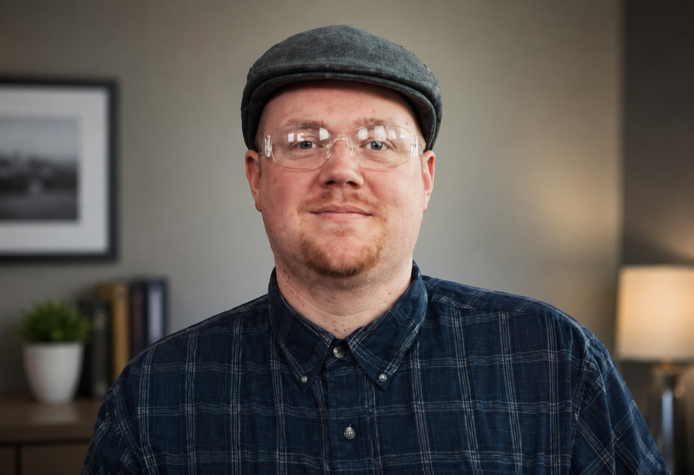

"A well instructed people alone can be a free people."
Public Affairs • Civic Engagement
Political Science Graduate
Penn State University
Class of 2025
Public affairs, civic engagement, and political communication have become the focus of my academic and professional journey. Through leadership, operations, communications, training, and organizational experience, I developed a strong interest in how institutions, policy, and civic participation shape communities.
Born and raised in Philadelphia, Pennsylvania, I spent more than thirty years in the city before relocating to Northeastern Pennsylvania.
After graduating from Frankford High School in 2001, I built experience in leadership, operations, communications, training, and organizational management before returning to higher education in 2021.
At Penn State University, I pursued a Bachelor of Arts in Political Science, graduating in December 2025. My studies strengthened my understanding of public affairs, civic engagement, political institutions, and policy development.
Today, I am pursuing opportunities in public affairs, advocacy, civic engagement, political communication, and public service while continuing to develop independent educational and civic projects.
I believe informed citizens, engaged communities, and accountable institutions remain essential to a healthy democracy.